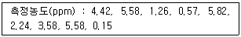
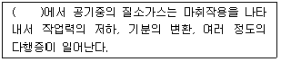
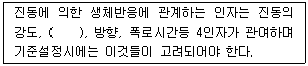
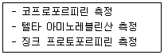

산업위생관리기사 (2003-05-25 기출문제)
1과목: 산업위생학개론
1. 작업대사율(RMR)계산시 필요한 인자와 가장 거리가 먼 것은?
- 작업시간
- 기초 대사량
- 작업에 소요된 열량
- 안정시 열량
(정답률: 93%)

2. 전신피로상태라 판단될 수 있는 경우는? (단, 작업을 마친 직후 회복기의 심박수를 측정하여 HR30-60 : 작업 종료 후 30-60초 사이의 평균 맥박수, HR60-90 : 작업 종료 후 60-90초 사이의 평균 맥박수, HR150-180 : 작업 종료 후 150-180초 사이의 평균 맥박수를 구한 수치를 적용하는 경우)
- HR30-60 이 100 미만이고 HR60-90 과 HR150-180 의 차이가 20 이상인 경우
- HR30-60 이 100 초과하고 HR60-90 과 HR150-180 의 차이가 20 미만인 경우
- HR30-60 이 110 미만이고 HR60-90 과 HR150-180 의 차이가 10 이상인 경우
- HR30-60 이 110 초과하고 HR60-90 과 HR150-180 의 차이가 10 미만인 경우
(정답률: 알수없음)
3. 기계화 또는 자동화로 인한 인간성 상실이 원인인 심인성 정신장해로 가장 적합한 것은?
- 성격이상
- 노이로제
- 히스테리
- 간질
(정답률: 43%)
4. 인간공학에서 인간과 기계관계의 구성인자의 특성이 무엇인지를 알아야 하는 단계는?
- 준비단계
- 선택단계
- 검토단계
- 구성단계
(정답률: 56%)
5. 피로의 증상으로 틀린항은?
- 체온이 높아지나 피로정도가 심해지면 도리어 낮아진다.
- 혈압은 초기는 높아지나 피로가 진행되면 도리어 낮아진다.
- 호흡이 얕고 빠른데 이는 혈액중 이산화탄소량이 증가하여 호흡중추를 자극하기 때문이다.
- 젖산 및 혈당치가 높아져 산혈증(acidosis)으로 전이되기도 한다.
(정답률: 50%)
6. Viteles의 산업피로의 본질 3대 요소가 아닌 것은?
- 생체의 생리적 변화
- 피로감각
- 작업량의 감소
- 에너지원의 고갈
(정답률: 10%)
7. 출근인원이 100명인 작업장의 세면장(남자용)넓이로 가장 알맞는 것은? (단, 후생시설의 넓이를 정하는 일반적인 식을 적용)
- 15 m2
- 10 m2
- 5 m2
- 2 m2
(정답률: 17%)
8. 중량물 취급과 관련하여 요통발생에 관여하는 요인으로 관계가 적은 것은?
- 작업습관과 개인적인 생활태도
- 물리적 환경요인: 작업빈도, 물체의 위치· 무게 및 크기
- 요통 및 기타 장애(자동차 사고, 넘어짐)의 경력
- 근로자의 심리상태 및 조건
(정답률: 91%)
9. TLV-TWA(time-weighted average)의 허용농도보다 3배가 높을 경우 권고되는 노출시간은? (단, ACGIH 에서의 근로자 노출의 상한치와 노출시간에 대한 권고 기준)
- 10분이하
- 20분이하
- 30분이하
- 40분이하
(정답률: 75%)
10. 38세 된 남성근로자의 육체적작업능력(PWC)은 15kcal/min이다. 이 근로자가 1일 8시간 동안 물체를 운반하고 있으며 이때의 작업대사량은 7kcal/min이고, 휴식시 대사량은 1.2kcal/min이다. 이 사람의 휴식시간과 작업시간의 배분(매시간별)은 어떻게 하는 것이 이상적인가?
- 12분 휴식 48분 작업
- 17분 휴식 43분 작업
- 21분 휴식 39분 작업
- 27분 휴식 33분 작업
(정답률: 58%)
11. 다음은 서울종로 혜화동 전철역에서 측정한 오존의 농도이다. 기하평균(ppm)은?

- 약 1.8
- 약 2.1
- 약 2.6
- 약 2.9
(정답률: 알수없음)
12. 석면 노출작업자 중에서 폐암사망률은 11/100이었다. 석면에 노출되지 않은 일반 인구에서 사망률은 1/100이었다. 석면에 의한 귀속위험도는?
- 61%
- 71%
- 81%
- 91%
(정답률: 65%)
13. 산업재해를 분류할 때 경미사고(minor accidents) 혹은 재해란 어떤 상태를 말하는가?
- 사망하지는 않았으나 입원할 정도의 상해
- 통원 치료할 정도의 상해가 일어난 경우
- 상해는 없고 재산상의 피해만 일어난 경우
- 재산상의 피해는 없고 시간손실만 일어난 경우
(정답률: 85%)
14. 1775년 영국의 외과의사 Pott에 의해 최초의 직업성 암(癌)으로 보고되었고 오늘날 검댕 속에 다환방향족 탄화수소가 원인인 것으로 밝혀진 질병은?
- 음낭암
- 중피종
- 방광암
- 폐암
(정답률: 92%)
15. 누적외상성장애(CTDs: Cumulative Trauma Disorders)의 원인이라고 할 수 없는 것은?
- 작업내용상 변화가 없거나 휴식시간 없이 손과 팔의 과도한 사용작업
- 불안전한 자세에서 장기간 고정된 한 가지 작업
- 작업속도가 빠른 상태에서 힘을 주는 반복작업
- 고온 작업장에서 갑작스럽게 힘을 주는 전신작업
(정답률: 67%)
16. 유해물질의 허용농도를 설정하는데 이용되는 자료와 가장 거리가 먼 것은?
- 화학구조상의 유사성
- 산업장 역학조사 자료
- 화학물질의 안전성
- 동물실험자료
(정답률: 알수없음)
17. 미국산업위생전문가협의회(ACGIH)에서 권고하고 있는 허용농도 적용상의 주의사항이 아닌 것은?
- 반드시 산업위생전문가에 의하여 적용되어야 한다.
- 기존의 질병이나 육체적 조건을 판단하는 척도로 사용될 수 없다.
- 안전농도와 위험농도를 정확히 구분하는 경계선이 아니다
- 산업장의 유해조건을 평가하기 위한 지침으로 사용할 수 없다.
(정답률: 75%)
18. 연간 근로일수가 300일 이며, 연간 근로시간수가 20,000시간인 사업장에서 1년간 2건의 재해로 발생된 노동 손실일수가 55일인 경우에서의 강도율은?
- 1.27
- 2.75
- 3.38
- 3.83
(정답률: 62%)
19. 근육운동을 하는 동안에 혐기성 대사에 동원되는 에너지원과 가장 거리가 먼 것은?
- 아데노신 삼인산(ATP)
- 크레아틴 인산(CP)
- 글리코겐
- 아세트 알데히드
(정답률: 알수없음)
20. 산업재해가 세번째 반복해서 발생했을 때 검토해야 할 사항으로 가장 적절한 것은?
- 설비공정에 대해 검토한다.
- 작업조건에 대해 검토한다.
- 개체요인에 대해 검토한다.
- 신체외 정신 의학적 문제에 대해 검토한다.
(정답률: 60%)
2과목: 작업위생측정 및 평가
21. 공기중 석면농도를 측정하는 방법으로는 충전식 휴대용펌프를 이용하여 여과지를 통하여 공기를 통과시켜 시료를 채취한 다음, 이 여과지에 ( ① )증기를 씌우고( ② )시약을 가한 후 위상차 현미경으로 400 - 450배의 배율에서 섬유수를 계수한다. ①,②의 내용으로 알맞는 것은? (단, NIOSH 방법 기준)
- 솔벤트 , 메틸에틸케톤
- 아황산가스 , 클로로포름
- 아세톤 , 트리아세틴
- 트리클로로에탄, 트리클로로에틸렌
(정답률: 42%)
22. 산업용 축전지를 제조하는 사업장에서 공기중 납 농도를 측정하기 위해 사용할 여과지로 가장 적절한 것은?
- MCE 여과지
- PVC 여과지
- PTFT 여과지
- 섬유상 여과지
(정답률: 73%)
23. 중량 분석법중에서 일반적으로 끊는점이 높은 유기 화합물의 분석에 사용되는 방법으로 가장 적절한 것은?
- 침전법
- 용매추출법
- 휘발법
- 전해법
(정답률: 42%)
24. 온도,습도측정에 관한 설명 중 틀린 것은?
- 측정점의 바닥면으로 부터 50cm이상 150cm이하의 위치에서 행하여야 한다.
- 저온 측정기기는 섭씨 영하 20도까지 측정할 수 있는 온도계를 사용한다.
- 습구온도 측정기기는 0.5도 간격의 눈금이 있는 아스만통풍건습계, 자연습구온도를 측정할 수 있는 기기를 사용한다.
- 아스만통풍건습계와 자연습구온도계의 측정시간 기준은 각각 5분이상으로 한다.
(정답률: 59%)
25. 분진측정에 의한 상대농도계가 갖는 특징이라 볼 수 없는 것은?
- 분진의 종류나 성상에 따른 감도 변동이 없다.
- 감도가 예민하고 저농도분진이라도 측정하기 쉽다.
- 취급법이 간단하고 취급상 개인차가 적다.
- 보통 1측정소 소요시간은 1-2분이다.
(정답률: 알수없음)
26. 세척제로 사용하는 트리클로로에틸렌의 근로자 노출농도를 측정하고자 한다. 과거의 노출농도를 조사해본 결과, 평균 60ppm이었다. 활성탄관을 이용하여 0.17ℓ /분으로 채취하였다. 트리클로로에틸렌의 분자량은 131.39이고 가스크로마토그래피의 정량한계는 시료당 0.5mg이다. 채취하여야 할 최소한의 시간(분)은? (단, 25℃, 1기압기준)
- 5.3분
- 6.7분
- 9.1분
- 13.9분
(정답률: 알수없음)
27. talc농도(TLV 20 mppcf) 40% 와 석영(TLV 25 mppcf) 60%를 함유한 생리학적으로 활성이며 광물성 혼합분진의 허용농도는? (단, 상가작용 기준)
- 21.2 mppcf
- 22.7 mppcf
- 23.9 mppcf
- 24.3 mppcf
(정답률: 알수없음)
28. 작업환경공기를 측정하였더니 TLV가 50ppm인 테트라클로 로에틸렌이 40ppm, TLV가 25ppm인 클로로포름이 20ppm, TLV가 100ppm인 트리클로로에틸렌이 70ppm이었다. 이러한 작업환경공기의 허용농도는? (단, 상가작용 기준)
- 약 57ppm
- 약 67ppm
- 약 77ppm
- 약 87ppm
(정답률: 알수없음)
29. 그라인딩 작업시 발생되는 먼지를 개인 시료 포집기를 사용하여 유리섬유여과지로 포집하였다. 이때의 유속은 1.5ℓ /min, 여과지 무게는 0.436㎎ 이다. 2시간의 포집하는 동안 유속은 1.3ℓ /min 로 떨어졌으며 여과지의 무게는 0.948㎎ 이었다. 먼지의 농도는 몇 ㎎/m3 인가?
- 약 1.8
- 약 3.1
- 약 1840
- 약 3040
(정답률: 47%)
30. 중량물을 취급하는 동작을 분석하는 대표적인 인간공학 평가도구인 NLE(NIOSH Lifting Equation)를 이용하여 평가할 때 단일작업시 RWL(Recommended Weight Limit, 추천 중량한계)을 구하여야 한다. 다음 중 RWL을 구할 때 고려되지 않는 변수는?
- 대칭지수
- 부하상수
- 수평계수
- 빈도계수
(정답률: 57%)
31. 산업위생통계에서 “ 표준화” 를 위해 적용되는 통계인자로 가장 적절한 것은?
- 측정치와 허용기준
- 평균치와 표준편차
- 측정치와 시료수
- 기하평균치와 표준편차
(정답률: 알수없음)
32. 작업장의 이산화탄소(CO2)를 분석한 결과 25℃ 1기압에서 100ppm 이었다. 이것은 몇 ㎎/m3 인가?
- 약 60 ㎎/m3
- 약 110 ㎎/m3
- 약 140 ㎎/m3
- 약 180 ㎎/m3
(정답률: 알수없음)
33. Lambert-Beer 법칙을 이용하는 분광 광도계법(spectrophotometric Method)에서 흡광도가 2배 일 때 시료 농도는 몇 배가 되는가? (단, 흡광계수 (absorptivity)와 셀(cell)의 길이는 일정하다고 가정한다.)
- 1/4배
- 1/2배
- 2배
- 4배
(정답률: 19%)
34. 기계음의 파워레벨(PWL)이 80㏈인 기계 4대와 85㏈인 기계 2대가 동시에 가동될 때 전체 소음의 파워레벨(PWL)은?
- 85 ㏈
- 90 ㏈
- 95 ㏈
- 100 ㏈
(정답률: 알수없음)
35. 소음에 대한 개인노출량을 측정하는 기기로 가장 적절한 것은?
- 소음계(sound level meter)
- 소음노출량계(noise dose meter)
- 옥타브밴드분석기(octaveband analyzer)
- 음향파워레벨계(sound power level meter)
(정답률: 50%)
36. 입경이 10㎛ 이고 입자밀도가 1.5g/cm3인 입자의 침강속도는? (단, 입경이 1∼50㎛인 먼지의 침강속도를 구하기 위해 산업위생분야에서 주로 사용하는 식적용, Lippmann)
- 약 0.25cm/sec
- 약 0.45cm/sec
- 약 0.65cm/sec
- 약 0.85cm/sec
(정답률: 74%)
37. 측정기구보정을 위한 2차표준기기에 해당되는 것은?
- Wet-test meter
- Soap bubble meter
- 'Frictionless' piston meter
- Pitot tube
(정답률: 73%)
38. 기본적인 여과포집의 메카니즘중 확산(Diffusion)에 가장 크게 영향을 미치는 인자는?
- 입자크기
- 면속도
- 입자농도
- 입자밀도
(정답률: 알수없음)
39. 다음중 흑구온도의 측정시간 기준으로 적절한 것은? (단, 직경이 15cm인 흑구온도계 기준 )
- 5분 이상
- 10분 이상
- 15분 이상
- 25분 이상
(정답률: 59%)
40. 시료채취방법 중 유해물질에 따른 흡착방법으로 적절치 않은 것은?
- 할로겐화된 지방족 유기용제 - 활성탄관
- 방향족 아민류 - 실리카겔관
- 에스테르류 - 활성탄관
- 알코올류 - 실리카겔관
(정답률: 알수없음)
3과목: 작업환경관리대책
41. 푸쉬-풀(push-pull)후드에 관한 설명으로 틀린 것은?
- 도금조와 같이 폭이 넓은 경우에 사용하면 포집효율을 증가시키면서 필요유량을 대폭 감소시킬 수 있다.
- 제어속도는 푸쉬 제트기류에 의해 발생한다.
- 설비 중 노즐의 각도는 제트기류의 방해받지 않도록 상향으로 일정한 각도 이상을 유지하도록 한다.
- 공정에서 작업물체를 처리조에 넣거나 꺼내는 중에 공기막이 파괴되어 오염물질이 발생한다.
(정답률: 84%)
42. 접착제를 취급하는 사업장에서 MEK 16ℓ 를 8시간 동안 균일하게 사용하고 있다. 작업장 용적이 [ 가로 40m ×세로 10m × 높이 3m ]이고, 단면적은 30m2일 때 면속도는? (단, K = 2, MW = 72.1, SG = 0.8⑤, TLV = 200ppm)
- 0.⑤ m/sec
- 0.10 m/sec
- 0.15 m/sec
- 0.20 m/sec
(정답률: 7%)
43. 송풍기 제작회사에서는 사용지침서에서 송풍기 정압 30mmH2O에서 150m3/min의 송풍량을 이동시킬 때 동력4kw에서 회전수 400rpm을 권고하고 있다. 만일 회전수를 25%까지 증가시킬 경우 송풍량(m3/min)은?
- 113
- 131
- 169
- 188
(정답률: 알수없음)
44. 개인보호구 중 발보호구에 대한 설명으로 틀린 것은?
- 가죽제 발보호 안전화는 중작업용(H), 보통작업용(S), 경작업용(L)이 있다.
- 고무제 안전화는 장화에 강철제 선심을 넣어 낙하 및 충격에 대한 발끝을 보호하고, 물이나 기름, 화학약품으로부터 발과 다리를 보호한다.
- 전기 대전방지용 안전화는 고압의 활선작업이나 정전작업 등 전기에 의한 감전으로부터 신체를 보호하기 위한 것이다.
- 발등보호 안전화는 가죽제 안전화의 발등에 방호대를 추가한 것이다.
(정답률: 알수없음)
45. 자연환기의 가장 큰 원동력이 될수 있는 것은 실내외 공기의 무엇에 기인 하는가?
- 기압
- 온도
- 조도
- 기류
(정답률: 알수없음)
46. 어떤 작업장의 음압수준이 80dB(A)이고, 근로자는 귀덮개를 착용하고 있다. 귀덮개의 차음평가수는 NRR = 19이다. 근로자가 노출되는 음압(예측)수준은? (단, OSHA 기준)
- 62dBA
- 68dBA
- 74dBA
- 78dBA
(정답률: 알수없음)
47. 전체환기(희석환기)를 적용하기 위한 작업장의 조건으로 맞지 않는 것은?
- 유해성이 낮다.
- 발생원이 움직인다.
- 발생량이 변동한다.
- 발생원이 흩어져 있다.
(정답률: 70%)
48. 밀어당김형 후드(push-pull hood)에 의한 환기로서 가장 효과적인 경우는?
- 발산원이 멀다.
- 발산농도가 높다.
- 발산량이 많다.
- 발산면이 넓다.
(정답률: 알수없음)
49. 분진대책 중의 하나인 발진의 방지 방법과 가장 거리가 먼 것은?
- 원재료 및 사용재료의 변경
- 생산기술의 변경 및 개량
- 습식화에 의한 분진발생 억제
- 밀폐 또는 포위
(정답률: 32%)
50. 방독마스크의 대상가스에 대한 흡수관(정화통) 구분으로 적절치 못한 것은?
- 유기가스용
- 암모니아용
- 황화수소용
- 질소가스용
(정답률: 알수없음)
51. 무겁고 또 비교적 큰 젖은 먼지(젖은 주조작업 발생먼지)의 반송속도 기준으로 적절한 것은?
- 45 m/sec 이상
- 35 m/sec 이상
- 30 m/sec 이상
- 25 m/sec 이상
(정답률: 67%)
52. 작업장내 압력을 양압( + )으로 유지해야할 작업장으로 가장 적절한 곳은?
- 오염이 높은 석면작업장
- 오염이 높은 유기용제 취급 작업장
- 깨끗한 공기를 필요로 하는 식품공업
- 납을 취급하는 축전지 공업
(정답률: 50%)
53. 희석환기의 또다른 목적은 화재나 폭발을 방지하기 위한 것이다. 폭발 하한치인 LEL(lower explosive limit)에 대한 설명 중 틀린 것은?
- 폭발성, 인화성이 있는 가스 및 증기 혹은 입자상의 물질을 대상으로 한다.
- LEL은 근로자의 건강을 위해 만들어 놓은 TLV보다 낮은 값이다.
- LEL의 단위는 % 이다.
- 오븐이나 덕트처럼 밀폐되고 환기가 계속적으로 가동되고 있는 곳에서는 LEL의 1/4을 유지하는 것이 안전하다.
(정답률: 63%)
54. 충진탑(packed bed type)의 충진물질이 갖추어야 할 조건이 아닌 것은?
- 압력손실이 적고 충진밀도가 클 것
- 단위부피내의 표면적이 클 것
- 세정액의 체류현상(hold-up)이 클 것
- 대상물질에 부식성이 작을 것
(정답률: 75%)
55. 연기발생기 이용에 관한 내용과 가장 거리가 먼 것은?
- 오염물질의 확산이동의 관찰
- 공기의 누출입에 의한 음과 축수상자의 이상음 점검
- 후드로 부터 오염물질의 이탈 요인의 규명
- 후드 성능에 미치는 난기류의 영향에 대한 평가
(정답률: 60%)
56. 층류와 난류 흐름을 판별하는 데 중요한 역할을 하는 레이놀즈수를 알맞게 설명한 것은?
- 관성력/점성력
- 관성력/중력
- 관성력/탄성력
- 압축력/관성력
(정답률: 50%)
57. 덕트내의 풍속측정에 사용되는 측정계가 아닌 것은?
- 피토우관(pitot tube)
- 풍차 풍속계
- 열선식 풍속계
- 절연저항계
(정답률: 64%)
58. 방진마스크에 대한 다음의 설명 중에서 알맞는 것은?
- 유해물의 농도가 규정 이상의 농도인 경우라도 충분한 산소가 있으면 사용할 수 있다.
- 유해성 fume이나 mist 등의 입자의 흡입을 방지하는 데는 사용할 수가 없다.
- 필터의 여과효율이 높고 흡입저항이 클수록 좋다.
- 여과효율이 좋으려면 필터에 사용되는 섬유의 직경이 작아야 한다.
(정답률: 38%)
59. 환기시스템에서 공기유량(Q)이 0.1415m3/sec, 덕트 직경이 9.0cm, 후드 유입손실 요소(Fh)가 0.5일 때 후드 정압(SPh)은? (단, 25℃, 1기압 기준)
- 35 mmH2O
- 45 mmH2O
- 55 mmH2O
- 65 mmH2O
(정답률: 43%)
60. 송풍량이 150m3/min이고 전압(총압)이 100㎜H2O이다. 송풍기 소요동력은? (단, 송풍기 효율이 0.7이다.)
- 3.0 ㎾
- 3.5 ㎾
- 4.0 ㎾
- 4.5 ㎾
(정답률: 70%)
4과목: 물리적유해인자관리
61. 닥트내 소음발생을 감소시키기 위한 방법으로 적합하지 않은 것은?
- 곡관에서의 송풍기는 가능한 한 굴곡부에 가깝게 위치시킨다.
- 갑자기 난류가 형성되지 않도록 확장관의 연결은 확장관의 각도를 서서히 증가시켜 연결한다.
- 단일송출관은 이중송출관(dual flow mouthpiece)으로 대치 한다.
- 굴곡부의 닥트는 완만하게 굴곡시킨다.
(정답률: 31%)
62. 일반적으로 작업장의 조도를 균등하게 하기위해 국소조명과 전체조명이 병용될 때 전체조명의 조도는 국소조명의 얼마로 조정하는가?
- 1/2 ~ 1/5
- 1/5 ~ 1/10
- 1/10 ~ 1/15
- 1/15 ~ 1/20
(정답률: 53%)
63. [CRT화면 : 키보드 : 주변]의 조도비로 가장 적당한 것은?
- 1 : 5 : 20
- 1 : 50 : 200
- 1 : 3 : 10
- 1 : 30 : 100
(정답률: 알수없음)
64. 음압이 2배가 되면 음압수준(dB)은 어떻게 변하는가?
- 약 6 dB 증가한다.
- 약 4 dB 증가한다.
- 약 3 dB 증가한다.
- 약 2 dB 증가한다.
(정답률: 72%)
65. 잠수작업 후 감압할 때 기포형성량에 관여하는 인자와 가장 거리가 먼 것은?
- 공포감
- 작업자의 체지방량
- 음주
- 최대환기량
(정답률: 47%)
66. 원자핵 전환 또는 원자핵 붕괴에 따라 방출되는 자연발생적인 전자파이며 투과력이 커, 인체를 통과할 수 있어 외부조사가 문제가 되는 방사선은?
- Χ (엑스)선
- γ (감마)선
- β (베타)선
- α (알파)선
(정답률: 37%)
67. 저주파차진에 유리하고 최대변위가 허용되지만 감쇠가 거의 없으며 공진시에 전달율이 매우 큰 방진재는?
- 방진고무
- 금속스프링
- 공기스프링
- felt
(정답률: 알수없음)
68. 고온환경에서 육체노동에 종사할 때 일어나기 쉬운것으로 탈수로 인하여 혈장량이 감소할 때 발생하는 건강장해로 가장 알맞는 것은?
- 열경련
- 열피로
- 열사병
- 열쇠약
(정답률: 10%)
69. 감압병의 예방 및 치료에 관한 설명으로 알맞지 않은 것은?
- 고압환경에서의 작업시간을 제한한다.
- 특별히 잠수에 익숙한 사람을 제외하고는 10m/mim속도 정도로 잠수하는 것이 안전하다.
- 헬륨은 질소보다 확산속도가 작고 체내에서 안정적이므로 질소를 헬륨으로 대치한 공기를 호흡시킨다.
- 감압이 끝날 무렵에 순수한 산소를 흡입시키면 감압시간을 25% 가량 단축시킬 수 있다.
(정답률: 60%)
70. ( )안에 알맞는 내용은?

- 4기압 이상
- 6기압 이상
- 8기압 이상
- 10기압 이상
(정답률: 80%)
71. 초음파의 생체작용에 대한 설명으로 맞지 않는 것은?
- 고주파성 초음파는 공기중에서 쉽게 전파되어 생체의 전신 및 국소적으로 문제를 일으킨다
- 작업자가 초음파에 폭로되더라도 8KHz까지의 가청음에 대한 청력장해는 오지 않는다고 알려져 있다.
- 인간의 피부는 폭로된 초음파의 1%만을 흡수하고 나머지는 반사되고 있다.
- 자각증상으로는 초음파폭로 3개월 이내에 음에 대한 불쾌감이 가장 많이 오며 두통,피로,구역등이 나타난다.
(정답률: 알수없음)
72. 단위 "rem" 에 대한 설명과 가장 거리가 먼 것은?
- 생체실효선량(dose-equivalent)
- rem=rad× RBE(상대적 생물학적 효과)
- 피조사체 1g에 100erg의 에너지 흡수
- rem은 roentgen equivalent man의 머리글자
(정답률: 10%)
73. 음의 크기 sone과 음의 크기레벨 phon과의 관계를 알맞게 나타낸 것은?(단, sone: S, phon: L )
- S = 2(L - 40)/10
- S = 3(L - 40)/10
- S = 4(L - 40)/10
- S = 5(L - 40)/10
(정답률: 59%)
74. 인간이 소리로 느낄 수 있는 음압이 60N/m2이라면 음압레벨(dB)은?
- 약 120
- 약 130
- 약 140
- 약 150
(정답률: 알수없음)
75. 자외선에 관한 설명으로 알맞지 않는 것은 ?
- 신체 대사를 억제하여 적혈구,백혈구,혈소판이 감소한다.
- 피부의 표피와 진피의 두께가 증가한다.
- 생체조직을 통과하는 거리는 수 mm 정도이다.
- 일명 화학선이라고도 하며 여러물질에 화학변화를 일으킨다.
(정답률: 알수없음)
76. 다음은 실내작업장의 자연채광에 관하여 설명한 것이다. 가장 알맞는 사항은 ?
- 조명의 평등을 요하는 작업장의 창은 남향창이 좋다.
- 톱날지붕을 갖는 작업장의 창은 남향창이 좋다.
- 창의 면적은 바닥 면적의 25 ∼ 30%가 적정하다.
- 창을 통한 자연채광의 입사각은 28° 이상이 좋다.
(정답률: 알수없음)
77. 유리공, 용광로 화부에게서 후극성 백내장(posterior cataract)을 일으키는 원인은?
- 자외선
- 가시광선
- 적외선
- X-ray
(정답률: 47%)
78. 다음 중 전신 진동의 인체폭로에 대한 평가 범위로 가장 적절한 것은?
- 1 ~ 80 Hz
- 80 ~ 100 Hz
- 200 ~ 400 Hz
- 400 ~ 600 Hz
(정답률: 50%)
79. ( )안에 가장 알맞는 것은?

- 진동원
- 개인감응도
- 작업능률
- 진동수
(정답률: 54%)
80. 소음의 흡음평가시 적용되는 잔향시간(Reverberation time)과 관련하여 기술한 내용 중 올바른 것은?
- 잔향시간은 실내공간의 크기와 비례한다.
- 실내흠음량을 증가시키면 잔향시간도 증가한다.
- 잔향시간은 음압수준이 30dB 감소하는데 소요되는 시간이다.
- 잔향시간을 측정하려면 실내배경소음이 90dB이상 이어야 한다.
(정답률: 28%)
5과목: 산업독성학
81. 타르, 피치, 아크용접, 분진작업시 작업자의 피부보호를 위해서 사용하는 내유수화성 보호크림(주원료: 아연화산화티탄, 산화철등)으로 가장 적절한 것은?
- 피막형크림
- 차광성크림
- 소수성크림
- 친수성크림
(정답률: 0%)
82. 다음 설명 중 틀린 것은?
- 벤젠은 백혈병을 일으키는 원인물질이다.
- 벤젠은 모든 방향족 탄화수소와 마찬가지로 만성장해로서 조혈장해를 유발한다.
- 벤젠은 주로 페놀로 대사되며 페놀은 벤젠의 생물학적노출지표로 이용된다.
- 방향족 탄화수소중 저농도에 장기간 노출되어 만성 중독을 일으키는 경우에는 벤젠의 위험도가 크다.
(정답률: 알수없음)
83. 다음 내용과 가장 관계가 깊은 것은?

- 비소
- 카드뮴
- 수은
- 납
(정답률: 46%)
84. 폐조직이 정상이면서 간질반응도 경미하고 망상섬유를 나타내는 진폐증을 무엇이라 하는가 ?
- 교원성 진폐증
- 비교원성 진폐증
- 활동성 진폐증
- 비활동성 진폐증
(정답률: 38%)
85. 먼지가 호흡기계로 들어올 때 인체가 가지는 방어기전을 조합한 것으로 가장 적절한 것은?
- 면역작용과 대식세포의 작용
- 폐포의 활발한 가스교환과 대식세포의 작용
- 점액 섬모운동과 대식세포에 의한 정화
- 점액 섬모운동과 면역작용에 의한 정화
(정답률: 82%)
86. 중금속 중에서 칼슘대사에 장애를 주어 신결석을 동반한 신증후군이 나타나고 다량의 칼슘배설이 일어나 뼈의 통증, 골연화증 및 골수공증과 같은 골격계 장해를 유발하는 것으로 가장 알맞는 것은?
- 망간(Mn)
- 카드뮴(Cd)
- 비소(As)
- 수은(Hg)
(정답률: 46%)
87. 유기용제별 생체내 대사물의 종류를 잘못 짝지은 것은?
- 톨루엔 - 요중 마뇨산
- 크실렌 - 요중 메틸마뇨산
- 메탄올 - 요중 메틸이소부틸케톤
- 이황화탄소 - 요중 TTCA
(정답률: 40%)
88. 직업성 피부질환에 관한 설명으로 알맞지 않은 것은?
- 보통 직업성 피부질환은 일반인에게서는 거의 발생하지 않고 직업적으로 직접 접할 수 있는 원인물질에 의하여 발생하는 피부질환에 국한한다.
- 직업성 피부질환으로 인한 근로자 휴직일수는 5%미만으로 발생빈도에 비하여 생산성을 크게 저해하지 않는다.
- 직업성 피부질환의 발생빈도는 타 질환에 비하여 월등히 많다는 것이 특징이다.
- 생명에 큰 지장을 초래하지 않는 경우가 많아 보고되는 것은 실제의 질환빈도 보다 매우 작다.
(정답률: 16%)
89. 통상적인 작업환경 공기에서 일산화탄소의 농도가 어느정도로 되면 사람의 헤모글로빈 50%가 불활성화 된다고 할 수 있는가?
- 0.1%
- 0.01%
- 0.001%
- 0.0001%
(정답률: 알수없음)
90. 진폐증을 유발시키는 분진이 석면분진과 같이 섬유상인 경우에 관한 설명으로 가장 알맞는 것은?
- 길이가 5㎛이하이고 너비가 1.5㎛보다 엷으면서 길이와 너비의 비가 3:1보다 큰 섬유가 유해하다.
- 길이가 5㎛이하이고 너비가 1.5㎛보다 엷으면서 길이와 너비의 비가 3:1보다 적은 섬유가 유해하다.
- 길이가 5㎛이상이고 너비가 1.5㎛보다 엷으면서 길이와 너비의 비가 3:1보다 큰 섬유가 유해하다.
- 길이가 5㎛이상이고 너비가 1.5㎛보다 엷으면서 길이와 너비의 비가 3:1보다 적은 섬유가 유해하다.
(정답률: 알수없음)
91. 단순 질식제의 설명이 아닌 것은?
- 혈액중의 혈색소와 결합하여 산소운반 능력을 방해함
- 환경 공기중에 다량 존재하여야 함
- 산소분압의 저하로 산소공급부족
- 수소, 탄산가스 등임
(정답률: 알수없음)
92. 생물학적 모니터링을 위한 시료가 아닌 것은?
- 호기 중의 유해인자나 대사산물
- 요 중의 유해인자나 대사산물
- 혈액 중의 유해인자나 대사산물
- 흡기 중의 유해인자나 대사산물
(정답률: 74%)
93. 유해물질 작용범위 결정의 예비독성검사에서 작용량-반응곡선(dose-response curve) 50%의 실험 동물이 일정시간동안 죽는 치사량을 나타내는 것은?
- LC50
- LD50
- ED50
- MAC
(정답률: 67%)
94. 무기연(鉛)의 만성노출에 의한 건강장해(만성작용)와 가장 거리가 먼 것은?
- 복부산통
- 만성 신부전
- 피로 및 쇠약
- 빈혈
(정답률: 28%)
95. 크롬 및 크롬중독에 관한 설명 중 알맞지 않은 것은?
- 3가크롬은 피부흡수가 어려우나 6가크롬은 쉽게 피부를 통과한다.
- 크롬중독으로 판정되었을 때 노출을 즉시 중단하고 EDTA를 복용하여야 한다.
- 산업장에서 노출의 관점에서 보면 3가크롬 보다 6가크롬이 더욱 해롭다고 할 수 있다.
- 배설은 주로 소변을 통해 배설되며 대변으로 소량이 배출된다.
(정답률: 알수없음)
96. 작업장의 공기 중 허용농도에 의존하는 것 이외에 근로자의 폭로상태를 측정하는 방법으로 근로자들의 조직과 체액 또는 호기를 검사해서 건강장애를 일으키는 일이 없이 폭로될 수 있는 양을 규정한 것은?
- BEI
- LD
- TLC
- STEL
(정답률: 62%)
97. 직업성 피부질환 유발에 관여하는 인자중 간접적 인자와 가장 거리가 먼 것은?
- 인종
- 연령
- 땀
- 성별
(정답률: 알수없음)
98. 급성 노출 후에는 BAL(dimercaprol)을 체중 1kg당 5mg을 근육주사로 즉시 치료하는 것이 바람직한 금속(중독)은?
- 납
- 카드뮴
- 수은
- 크롬
(정답률: 알수없음)
99. 페노바비탈은 디란틴을 비활성화시키는 효소를 유도함으로써 급·만성의 독성이 감소될 수 있다. 이러한 상호작용을 무엇이라고 하는가?
- 상가작용
- 길항작용
- 부가작용
- 단독작용
(정답률: 75%)
100. 다음 중 Haber의 법칙을 가장 잘 설명한 공식은? (단, K: 유해지수, C: 농도, t: 시간)
- K = C2 × t
- K = C × t
- K = C/t
- K = t/C
(정답률: 60%)